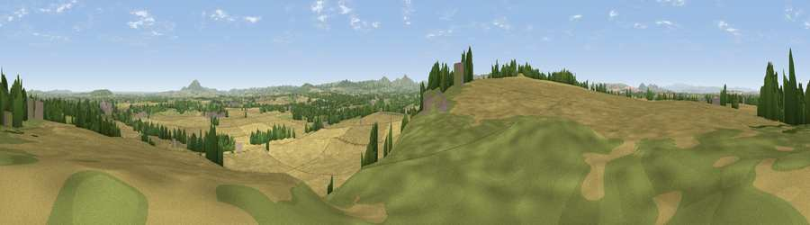

Viewpoint near Bayston Hill
#10882 in England · top 36% of its area beats it · near Bayston HillThe view, rendered

A 360° render of this exact spot computed from the terrain model, tree cover and land cover — summer colours, afternoon light, calibrated against photographs of famous viewpoints. Real trees, hedges and buildings will differ in detail.
The panorama
Grey silhouette: terrain skyline in each direction (720 bearings, Earth curvature and refraction included). Dashed green: skyline with trees (+15 m) and buildings (+8 m) as obstacles. Blue strip: how far the ground is visible on each bearing.
Where the view opens
Wedge length = distance to the farthest visible ground on that bearing (vegetation-aware). Rings at 10, 25 and 50 km.
What fills the view
64% cropland · 22% grassland · 12% woodland · 2% built-up
Angular shares of the visible panorama (visual magnitude), not map area. Landscape diversity 0.42 (0–1 Shannon).
Key numbers
More beautiful places nearby
The staircase of upgrades: each row has a higher view potential than everything closer. Driving times are estimates from straight-line distance, calibrated against real road routing — check an actual route before setting out.
| Place | Direction | Drive | Score |
|---|---|---|---|
| Viewpoint near Bayston Hill | SW · 1 km | ~2 min | 66.1 |
| Lyth Hill | SW · 1 km | ~2 min | 66.8 |
| Broompatch | WSW · 5 km | ~11 min | 71.3 |
| Radlith | WSW · 6 km | ~13 min | 73.3 |
| Viewpoint near Plealey | WSW · 6 km | ~13 min | 78.0 |
| Earl's Hill | WSW · 7 km | ~15 min | 82.2 |
| The Lawley | S · 10 km | ~19 min | 85.8 |
| Viewpoint near Little Wenlock | E · 15 km | ~27 min | 86.6 |
52.66157, -2.77359 · source: screening · position refined by local search. Computed location — check access rights before visiting.